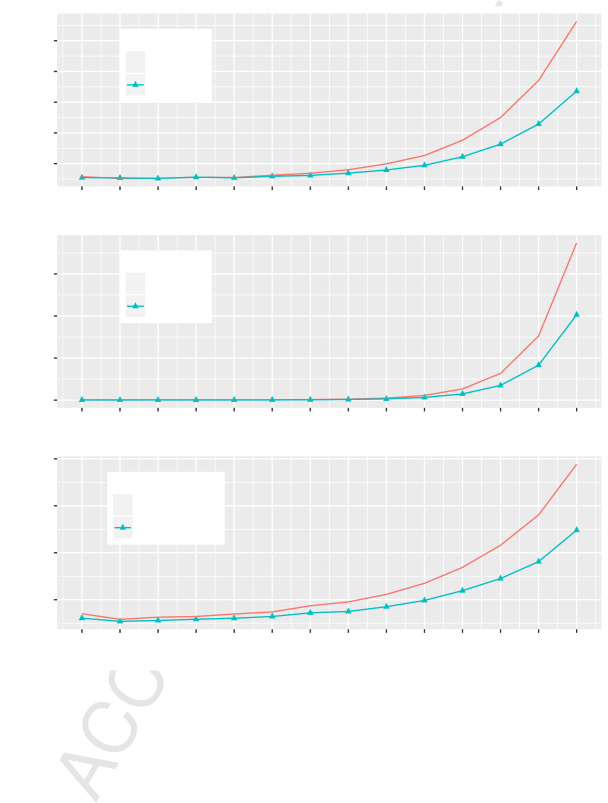
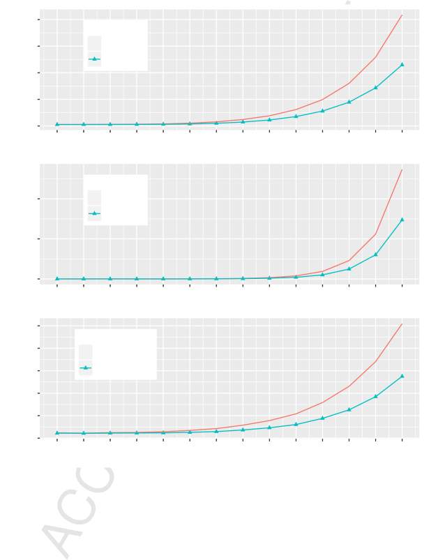

Application of wavelet decomposition in time-series forecasting Keyi Zhang, Ramazan Gençay, M. Ege Yazgan
PII: S0165-1765(17)30237-9
DOI: http://dx.doi.org/10.1016/j.econlet.2017.06.010 Reference: ECOLET 7654
To appear in: Economics Letters
Received date : 29 March 2017
Revised date : 7 June 2017
Accepted date : 8 June 2017
Please cite this article as: Zhang, K., Gençay, R., Ege Yazgan, M., Application of wavelet decomposition in time-series forecasting. Economics Letters (2017), http://dx.doi.org/10.1016/j.econlet.2017.06.010
This is a PDF file of an unedited manuscript that has been accepted for publication. As a service to our customers we are providing this early version of the manuscript. The manuscript will undergo copyediting, typesetting, and review of the resulting proof before it is published in its final form. Please note that during the production process errors may be discovered which could affect the content, and all legal disclaimers that apply to the journal pertain.
*Highlights (for review)


Wavelet-based multiresolution analyses can decompose a time series into a set of constitutive series with an explicitly defined hierarchical structure.
ln this paper, we show that this decomposition method can improve the accuracy of forecasts of original times series data.
*Title Page

Application of Wavelet decomposition in Time-Series Forecasting
Keyi Zhang, Ramazan Genc¸ay, M. Ege Yazgan∗ June 6, 2017
Observed time series data can exhibit different components, such as trends, seasonality, and jumps, which are characterized by different coefficients in their respective data generating processes. Therefore, fitting a given time series model to aggregated data can be time consuming and may lead to a loss of forecasting accuracy. In this paper, coefficients for variable components in estimations are generated based on wavelet-based multiresolution analyses. Thus, the accuracy of forecasts based on aggregate data should be improved because the constraint of equality among the model coefficients for all data components is relaxed.

JEL classification: C53, G17
Keywords: Wavelet Decomposition; Combining Forecasts; Reconciling Forecasts; Hierarchical Time Series.
∗Keyi Zhang and Ramazan Gen¸cay are affiliated with the Department of Economics, Simon Fraser University, Burnaby, BC, V5A 1S6, Canada. Ege Yazgan is affiliated with the Department of Economics, Bilgi University, Istanbul, Turkey. The corresponding author is Ramazan Genc¸ay, rgencay@sfu.ca, Tel: 778-782-3934. Ramazan Gen¸cay gratefully acknowledges financial support from the Natural Sciences and Engineering Research Council of
*Manuscript
Click here to view linked References

Application of Wavelet decomposition in Time-Series Forecasting
Keyi Zhang, Ramazan Genc¸ay, M. Ege Yazgan∗ June 6, 2017
Observed time series data can exhibit different components, such as trends, seasonality, and jumps, which are characterized by different coefficients in their respective data generating processes. Therefore, fitting a given time series model to aggregated data can be time consuming and may lead to a loss of forecasting accuracy. In this paper, coefficients for variable components in estimations are generated based on wavelet-based multiresolution analyses. Thus, the accuracy of forecasts based on aggregate data should be improved because the constraint of equality among the model coefficients for all data components is relaxed.

JEL classification: C53, G17
Keywords: Wavelet Decomposition; Combining Forecasts; Reconciling Forecasts; Hierarchical Time Series.
∗Keyi Zhang and Ramazan Gen¸cay are affiliated with the Department of Economics, Simon Fraser University, Burnaby, BC, V5A 1S6, Canada. Ege Yazgan is affiliated with the Department of Economics, Bilgi University, Istanbul, Turkey. The corresponding author is Ramazan Genc¸ay, rgencay@sfu.ca, Tel: 778-782-3934. Ramazan Gen¸cay gratefully acknowledges financial support from the Natural Sciences and Engineering Research Council of

Wavelet-based multiresolution analyses can decompose a time series into a set of constitutive se- ries with an explicitly defined hierarchical structure. In this paper, we show that this decomposition method can improve the accuracy of forecasts of original times series data.
A hierarchical time series includes multiple times series in which the high-level observations are aggregated according to low-level data. Economic data often have this hierarchical structure. For example, GDP data for a country, state, and city are a group of hierarchical time series based on geography. Conventional approaches to performing forecasts using such hierarchical data involve either a top-down or bottom-up method or a combination of the two. The top-level data could be forecast first, and then these forecasts could be disaggregated based on historical proportions (top-down approach); alternatively, the bottom-level data could be forecast first, and then addi- tional data could be included to obtain the top-level forecasts (bottom-up approach).1 Thus, when performing forecasts, the value of the data and the structure is important.
Ignoring the hierarchical structure of the data and forecasting all series at all levels indepen- dently will usually lead to the undesirable consequence in which higher-level forecasts are not equal to the sum of the directly related lower-level forecasts. To address this issue, Hyndman, Ahmed, Athanasopoulos, and Shang (2011) presents a framework to ensure that forecasts are added ap- propriately by adjusting the independent forecasts. That is, given multiple times series that are hierarchically organized, an unbiased and efficient forecast can be achieved without losing the hi- erarchical structure.

In this paper, we extend the application of Hyndman et al. (2011) to any univariate times series data. We apply wavelet-based multiresolution analyses to expand univariate time series data into a group of hierarchical series in a meaningful manner. This application provides the opportunity to study and apply the structure of the data when forecasting.
To examine whether the wavelet decomposition can improve forecasting accuracy, we com- pare the forecast accuracy obtained by different methods. The accuracy benchmarks are forecasts performed using conventional univariate models, which are applied to the wavelet-decomposed hi- erarchical series, and the forecasts at the top level are reconciled as the raw data. Therefore, for each univariate model, a pair of forecast results is obtained, with one based solely on raw data and one based on a multiresolution analysis. A comparison of these results can be used to test the accuracy of our method because the forecast model is not changed and any improvements in forecast accuracy can be attributed to the wavelet decomposition method.
In multiresolution analyses, sequences of local averages (smooths) and differences (details) in the time series at difference scales are obtained. Each smooth and detail has the same number of observations as the raw time series data, and an explicit hierarchical structure is observed among the raw data and the decomposed smooths and details.2 We apply the traditional univariate time
1The examples of combination forecasts include Claeskens, Magnus, Vasnev, and Wang (2016); Del Negro, Hasegawa, and Schorfheide (2016); Chen, Turnovsky, and Zivot (2014); Zellner and Tobias (2000); Rapach, Strauss, and Zhou (2010); Fliedner (1999); Kohn (1982); Tiao and Guttman (1980).
2More technical details on wavelet-based multiresolution analyses can be found in Gen¸cay, Sel¸cuk, and Whitcher

series prediction methods to the raw data and their decomposed components independently, then combine and reconcile these forecasts according to the hierarchical structure so that the revised forecasts will preserve the same hierarchy as the original sample.3 The proposed methodology is parsimonious because the forecast is based only on the time series of interest, and it is independent of the forecasting models. We demonstrate our proposed method by forecasting the daily returns of the S&P500 index using a sample from February 14, 2011 to August 19, 2016. Several benchmark univariate time series prediction methods are considered. Compared with the approach that applies only conventional methods to raw data, the forecast accuracy is improved when the wavelet-based multiresolution analysis is applied. These results suggest that wavelet decomposition can help improve the accuracy of forecasting a univariate time series.
Our purposed methodology is based on the approach detailed in Hyndman et al. (2011) and augmented by a wavelet-based multiresolution analysis. Essentially, we use a regression model (OLS) to reconcile the forecasts at different wavelet-decomposed series, which maintains consistency among the refined predictions at all levels. Therefore, higher-level predictions are equal to the sum of their directly related lower-level predictions.
The general procedure takes four steps. First, we apply wavelet-based multiresolution analysis to decompose the raw data X into wavelet details and smooths, {S1, D1, S2, D2}. These multiple time series have the properties of a group of hierarchical time series.

Raw data, X
S1 D1
S2 D2
Next, for a given training sample with size T , we can use a conventional univariate model to conduct first-round forecasts at all hierarchical levels independently with a horizon h. For example,
YˆT +h = Xˆ, Sˆ1, Dˆ1, Sˆ2, Dˆ2 ∗ can be predicted by AR(1), where YˆT +h has a dimension 5-by-1 and
time index T + h.
Because the wavelet-decomposed components (raw data, details and smooths at different levels) have an explicit hierarchical structure, we can express the variables on each scale as a linear
(2001).
3Our approach using wavelet transform for forecasting is similar to Conejo, Plazas, Espinola, and Molina (2005); however, the main difference is that in Conejo et al. (2005), the forecast is conducted via a bottom-up approach, whereas we apply an optimal reconciliation approach that utilizes information from all levels.
combination of the lowest level (base-level) variables, β = [S2, D2, D1]∗, which have no descendants. For example, X = S2 + D2 + D1, and S1 = S2 + D2. Therefore, a summing” matrix, Z, with entries of {0, 1} can fully capture this linear relationship in a given hierarchy.
⎢ ⎥
⎥
⎡ X ⎤ ⎡S2 + D2 + D1⎤ ⎡1 1 1⎤ ⎡ ⎤
S1
⎣ ⎦
⎣ ⎦
S2
D2
⎣
S2
D2
⎦
1 0 0
0 1 0
⎢ ⎥ ⎢
S2 + D2
1 1 0 S2
D1
Y ≡ ⎢D1⎥ = ⎢ D1 ⎥ = ⎢0 0 1⎥ ⎣D2⎦ ≡ Zβ
With most univariate time series models4, the first-round independent forecasts, YˆT +h = Xˆ, Sˆ1, Dˆ1, Sˆ2, Dˆ2 ∗, do not preserve the same hierarchical structure as the original training sample, Y , i.e., YˆT +h =
ZβˆT +h. Thus, those forecasts are not inherently consistent with each other.
Because of the independent predictions at different hierarchical levels and the multiresolution structure, we regress the prediction result vector, YˆT +h, on the corresponding summing matrix, Z.
The objective of this step is to identify the set of base-level forecasts, β˜T +h = S˜2, D˜2, D˜1 ∗, that
minimizes the squared deviation from the first round of independent forecasts.
b
β˜T +h = argmin YˆT +h − Zb ∗ YˆT +h − Zb
Thus, the refined base-level forecasts, β˜T +h, can be estimated using OLS.5

Finally, the refined optimal combination forecasts6 at all hierarchical levels can be calculated by Y˜T +h = Zβ˜T +h. Among these forecasts, we are particularly interested in the accuracy of the refined forecasts at the top level, X˜T +h = S˜2,T +h + D˜2,T +h + D˜1,T +h, which corresponds to the original time series, X.
Data
A sample of S&P 500 index daily observations from February 14, 2011 to August 19, 2016 are used to demonstrate our forecast results. The daily returns are calculated according to the first difference in the log-transformed index price level on each trading day. The prediction is conducted using a multi-step horizon out-of-sample forecast approach without model re-estimation. No information beyond each training sample is needed to generate the corresponding forecasts. We apply a rolling window approach to generate a sequence of similar out-of-sample predictions.
4One exception is the random walk model in which prediction values are simply the last observations of the training sample.
5Unequal weights can also be used in estimating betas. The performance of alternative estimation methods (such as WLS or FGLS) shall be evaluated in future studies.
6The term “optimal combination” is from Hyndman et al. (2011). The reconciled forecast is considered as optimal in the sense that it minimizes the mean squared deviation from the independent predictions at all hierarchy levels.

Results
Because the goal of this paper is to demonstrate the marginal contribution obtained by applying the wavelet decomposition approach, the accuracy of the forecasts should be compared between the methods with and without the wavelet-based multiresolution analysis using the same univariate time series model. Therefore, any forecast improvement can be attributed to the wavelet decomposition instead of to a specific time series model. In addition, cross-model comparisons are not directly relevant to our purpose, which explains why the forecast results between AR(1) and AR(2), which are both augmented by a multiresolution analysis, are not compared.
We demonstrate the forecast improvements using the mean absolute error (MAE) and the root mean squared error (RMSE). The benchmark univariate time series models include an autoregres- sive model with different numbers of the lag terms, ARMA(1, 1) and an optimal ARIMA model that uses the automatic algorithm of Hyndman and Khandakar (2008). Different lengths of rolling windows and forecast horizons are examined. When calculating the multi-step forecasts, yˆT +h with h > 1, the predicted values from shorter steps are used, yˆT +τ with τ < h.
In tables I and II, we show the percentage improvements (decreases) in the MAE and RMSE of the multi-step forecasts performed using the multiresolution-analysis augmented method and compare these results with the forecasts obtained using the corresponding conventional approaches. Multiresolution analyses are conducted using a level-2 MODWT with a haar wavelet and a periodic boundary condition. The benchmark models include AR(1), AR(2), AR(3), AR(6), ARMA(1, 1), and ARMA.auto, which is based on an optimal ARIMA model using the automatic algorithm to select the model specifications (Hyndman and Khandakar, 2008). We consider different forecast windows (10 days, 30 days, and 50 days)7 and forecast horizons (maximum of 14 days).
In most cases, significant forecast improvements are obtained, and an interesting pattern is observed. The improvement in forecast accuracy obtained from using the proposed method is more significant in cases with a shorter estimation window or longer forecast horizon. For example, in the AR(2) model, a 45.71% decrease in the MAE is observed when a 10-day window and a 14-day forecast horizon are used, whereas a 7.44% decrease in the MAE is observed when a one-day forecast horizon is used and a 0.30% decrease is observed when a 50-day estimation window is used. This pattern suggests that the proposed method is relatively more powerful when the forecast task is more demanding (fewer observations or a longer forecast horizon). The statistical significance of the forecast improvements are shown in the Table III and IV.8
In figures 1 and 2, we show the side-by-side comparisons of the MAE and RMSE between the results of the multiresolution-analysis augmented method and the corresponding conventional ap- proaches: AR(1), AR(2), and ARMA(1, 1). For all cases, the forecast accuracy deteriorates as the
7AR(6) is not used in the cases with 10-day forecast windows due to the limit of the sample size.
8As a robustness check, we also conducted the empirical test using S&P 500 Net Total Return index, which reflects the effects of the dividend reinvestment and withholding tax deduction. Similar results are obtained and available in online appendix.

forecast horizon is increased, whereas our proposed method shows consistently better results (lower prediction error in terms of the MAE and RMSE) than the benchmark. This result suggests that the multiresolution-analysis augmented method is a relatively more robust method for increasing forecast horizons.
Hyndman et al. (2011) shows that optimal combination forecast results perform well compared with the results of conventional top-down approaches and the bottom-up method. However, these optimal combination forecasts rely on the availability of multivariate time series that have a hier- archical structure and can be aggregated at different levels.
In this study, we propose a methodology for extending the forecast approach in Hyndman et al. (2011); Hyndman, Lee, and Wang (2016) to any univariate time series data. We use wavelet-based multiresolution analyses to decompose the original univariate time series into a group of time series (wavelet details and smooths) that have an explicit hierarchical structure. Therefore, the optimal combination forecast approach can be applied to a univariate times series. We demonstrate the improved accuracy of the multiresolution-analysis augmented forecasting method using an example from the S&P500 index.

The numbers in the table are percentage improvements (decreases) in mean absolute error (MAE) of multi-step forecasts by multiresolution-analysis augmented method, comparing with forecasts using corresponding benchmark models without using mul- tiresolution analysis. Multiresolution analysis is conducted by level-2 MODWT with haar wavelet. The sample is based on the daily returns of the S&P500 index from February 14, 2011 to August 19, 2016. Rolling window forecasts are conducted with 10, 30, and 50 days as the window length. Each forecast practice is based on the information limited to the observations during corresponding window period. For example, the procedure for an h-step 10-day rolling window forecast includes: 10-day observations are used to generate wavelet-based hierarchical multiple time series; an h-step out-of-sample forecast is conducted for each times series without re-estimation, where multi-step forecasts, yˆT +h with h > 1, take previous period’s predicted values as input; refined combination forecasts are calculated based on yˆT +h at all levels. The last column are the forecast improvements based on the average MAE among all h-step forecasts. The ARMA.auto is based on an optimal ARIMA model using the automatic algorithm of Hyndman and Khandakar (2008).
Forecast horizon, daily basis
1 2 3 4 5 6 7 8 9 10 11 12 13 14 Ave
10-day rolling window forecast
6
AR(1)-MRA 2.02 −1.43 0.40 −0.15 0.77 2.20 4.01 6.12 10.10 13.96 19.50 24.73 30.11 34.22 16.85
AR(2)-MRA 7.44 2.19 6.32 6.13 14.20 16.80 27.78 34.57 39.78 42.52 44.28 44.99 45.44 45.71 45.16
AR(3)-MRA 13.66 7.01 13.28 12.14 16.14 17.64 19.50 17.53 16.20 9.94 3.94 −6.51 −20.57 −39.17 −29.4
ARMA(1, 1)-MRA 5.54 2.75 4.27 3.51 5.34 5.57 8.04 10.43 12.42 15.52 18.44 22.44 26.12 28.72 15.34
ARMA.auto-MRA −1.57 −1.24 −0.46 −1.83 −2.09 −1.13 −1.46 −0.90 −2.01 −1.69 −1.73 −1.49 −2.89 −2.86 −1.67
30-day rolling window forecast
AR(1)-MRA −0.26 −1.62 −1.08 −1.13 −0.40 −0.74 −0.13 −0.80 −0.26 −0.14 −0.53 −0.94 −0.53 −0.34 −0.64
AR(2)-MRA 0.42 −1.02 0.04 0.10 0.93 0.65 1.34 1.14 1.36 2.13 3.06 2.33 2.70 3.64 1.36
AR(3)-MRA 1.55 0.52 1.29 0.59 1.87 0.54 0.79 0.61 1.32 1.57 2.75 3.20 2.93 3.43 1.67
AR(6)-MRA 5.77 2.35 2.25 0.85 2.36 2.98 3.75 2.67 4.72 5.11 8.23 8.88 7.90 9.36 4.97
ARMA(1, 1)-MRA 0.91 0.53 0.55 0.41 2.02 2.27 2.69 2.47 2.70 2.80 4.15 4.18 4.72 4.52 2.52
ARMA.auto-MRA −2.88 −0.44 −0.85 −1.00 −0.67 −0.54 0.36 0.24 0.33 0.45 0.64 0.98 0.15 0.50 −0.20
50-day rolling window forecast
AR(1)-MRA | −1.63 | −1.70 | −1.03 | −1.12 | −0.41 | −0.47 | −0.48 | −0.44 | −0.16 | −0.14 | −0.31 | −0.39 | −0.33 | −0.17 | −0.63 |
AR(2)-MRA | −1.95 | −0.58 | −0.33 | −0.24 | −0.45 | 0.00 | 0.31 | 0.22 | 0.25 | 0.15 | 0.39 | −0.06 | 0.16 | 0.30 | −0.13 |
AR(3)-MRA | −2.59 | −0.31 | 0.71 | −0.83 | −0.45 | −0.22 | 0.33 | 0.26 | −0.36 | 0.06 | 0.58 | 0.22 | 0.06 | 0.38 | −0.16 |
AR(6)-MRA | −0.87 | 0.07 | 0.42 | −0.70 | −0.06 | 0.62 | 0.74 | 0.71 | 1.81 | 1.59 | 2.35 | 1.74 | 2.29 | 2.76 | 0.95 |
ARMA(1, 1)-MRA | −3.08 | 0.41 | −0.53 | 1.25 | 0.85 | 0.32 | 0.65 | 1.18 | 1.89 | 1.23 | 1.04 | 1.64 | 1.38 | 2.10 | 0.74 |
ARMA.auto-MRA | −4.83 | −2.42 | −1.57 | −1.81 | −2.13 | −0.96 | −0.36 | −0.43 | 0.60 | −0.55 | 0.10 | −0.59 | −0.63 | −0.80 | −1.18 |
The numbers in the table are percentage improvements (decreases) in root mean squared error (rMSE) of multi-step forecasts by multiresolution-analysis augmented method, comparing with forecasts using corresponding benchmark models without using multiresolution analysis. Multiresolution analysis is conducted by level-2 MODWT with haar wavelet. The sample is based on the daily returns of the S&P500 index from February 14, 2011 to August 19, 2016. Rolling window forecasts are conducted with 10, 30, and 50 days as the window length. Each forecast practice is based on the information limited to the observations during corresponding window period. For example, the procedure for an h-step 10-day rolling window forecast includes: 10-day observations are used to generate wavelet-based hierarchical multiple time series; an h-step out-of-sample forecast is conducted for each times series without re-estimation, where multi-step forecasts, yˆT +h with h > 1, take previous period’s predicted values as input; refined combination forecasts are calculated based on yˆT +h at all levels. The last column are the forecast improvements based on the average rMSE among all h-step forecasts. The ARMA.auto is based on an optimal ARIMA model using the automatic algorithm of Hyndman and Khandakar (2008).
Forecast horizon, daily basis
1 2 3 4 5 6 7 8 9 10 11 12 13 14 Ave
10-day rolling window forecast
7
AR(1)-MRA 3.62 0.25 4.06 8.37 17.53 26.67 34.68 38.75 41.52 42.71 43.63 44.17 44.62 44.92 42.90
AR(2)-MRA 11.02 9.98 28.37 37.57 45.56 45.30 46.28 46.02 46.19 46.13 46.16 46.15 46.15 46.15 46.15
AR(3)-MRA 17.64 17.78 36.08 37.89 43.14 41.38 41.24 40.01 38.31 35.08 29.69 20.82 6.90 −13.86 −4.00
ARMA(1, 1)-MRA 6.14 3.55 8.93 9.40 17.11 24.44 31.37 37.02 40.84 43.92 44.41 45.38 45.78 45.96 41.51
ARMA.auto-MRA 0.30 0.48 0.53 −0.59 −1.46 0.84 0.68 2.10 0.20 2.89 −0.12 1.70 1.75 0.51 0.71
30-day rolling window forecast
AR(1)-MRA 0.70 −1.11 −0.55 −1.12 0.14 −0.52 0.43 −0.40 −0.04 0.08 −0.98 −1.65 −0.86 −0.82 −0.48
AR(2)-MRA 2.52 0.10 4.61 1.41 5.47 5.78 9.39 12.67 16.40 18.84 25.09 26.58 31.71 34.22 17.45
AR(3)-MRA 3.38 1.54 5.08 3.06 6.94 6.45 10.79 13.18 18.43 19.60 25.70 28.35 30.75 34.36 18.67
AR(6)-MRA 8.08 3.93 8.28 3.46 9.84 17.10 18.63 23.81 29.56 33.25 40.73 38.43 41.38 42.86 30.47
ARMA(1, 1)-MRA 3.05 1.15 4.05 2.75 5.91 6.07 9.03 9.58 12.25 14.20 18.44 19.76 22.60 24.69 12.06
ARMA.auto-MRA 0.31 0.12 1.35 0.46 −0.00 −0.08 1.40 1.08 1.20 1.84 0.86 2.41 1.28 1.83 1.00
50-day rolling window forecast
AR(1)-MRA −0.62 −1.36 −1.08 −0.98 0.14 −0.22 0.03 0.03 −0.05 0.24 −0.68 −0.58 −0.40 −0.11 −0.40
AR(2)-MRA −0.19 −0.35 0.56 −0.57 0.09 0.43 0.69 0.86 0.82 0.39 1.33 0.59 0.90 0.22 0.41
AR(3)-MRA −0.54 0.17 2.07 −0.96 0.79 0.28 1.23 1.72 1.16 0.99 3.13 1.75 1.79 0.98 1.05
AR(6)-MRA 0.85 0.62 3.14 0.30 3.75 4.89 5.83 8.29 11.04 12.57 17.72 17.90 22.12 24.30 10.54
ARMA(1, 1)-MRA −1.55 0.48 −0.10 1.85 1.82 2.86 3.34 3.32 5.54 6.24 7.49 7.50 9.25 10.56 4.35
ARMA.auto-MRA −1.89 −1.37 −0.42 −1.61 −1.34 −0.69 0.36 −0.13 0.69 0.06 0.90 −0.26 −0.33 −0.19 −0.45

The numbers in the table are the Paired t-statistics of the difference in means between the absolute prediction errors from the benchmark models and corresponding multiresolution-analysis augmented forecasts. Multiresolution analysis and Rolling window forecasts are conducted in the same way as described in Table I. The sample is based on the daily returns of the S&P500 index from February 14, 2011 to August 19, 2016.
Forecast horizon, daily basis
1 2 3 4 5 6 7 8 9 10 11 12 13 14
10-day rolling window forecast
AR(1)-MRA 2.69 −2.33 0.54 −0.15 0.50 0.91 1.05 1.04 1.15 1.10 1.15 1.13 1.13 1.12
AR(2)-MRA 6.44 1.72 2.44 1.32 1.46 0.96 1.04 1.02 0.99 0.99 1.01 1.00 0.99 1.00
AR(3)-MRA 10.44 4.10 4.04 2.28 1.58 1.14 0.93 0.68 0.54 0.29 0.10 −0.14 −0.36 −0.53
ARMA(1, 1)-MRA 6.03 3.42 4.52 2.90 3.46 2.77 3.12 3.04 2.78 2.70 2.54 2.48 2.34 2.21
8
ARMA.auto-MRA −1.87 −1.73 −0.61 −2.60 −2.68 −1.51 −1.77 −1.08 −2.13 −1.82 −1.70 −1.35 −2.51 −2.40
30-day rolling window forecast
AR(1)-MRA −0.33 −2.11 −2.11 −1.81 −1.06 −1.51 −0.30 −1.50 −0.60 −0.25 −1.22 −1.72 −1.16 −0.64
AR(2)-MRA 0.41 −1.51 0.04 0.15 1.07 0.81 1.28 0.94 0.94 1.20 1.43 0.92 0.86 0.98
AR(3)-MRA 1.33 0.85 1.71 0.78 2.23 0.60 0.69 0.47 0.78 0.83 1.22 1.10 0.89 0.83
AR(6)-MRA 4.11 2.96 1.87 0.82 1.74 1.56 1.92 1.15 1.66 1.48 1.74 1.75 1.26 1.24
ARMA(1, 1)-MRA 0.78 0.75 0.71 0.63 2.44 2.87 2.71 2.38 2.19 2.12 2.76 2.55 2.51 2.20
ARMA.auto-MRA −2.51 −0.57 −1.11 −1.47 −1.09 −0.98 0.72 0.43 0.70 0.83 1.36 1.89 0.37 1.06
50-day rolling window forecast
AR(1)-MRA −2.14 −2.11 −2.16 −1.93 −1.27 −1.16 −1.45 −1.10 −0.52 −0.39 −1.13 −1.22 −1.27 −0.65
AR(2)-MRA −2.04 −0.93 −0.52 −0.47 −0.86 0.01 1.00 0.72 0.78 0.72 1.24 −0.21 0.53 1.34
AR(3)-MRA −2.29 −0.60 1.29 −1.80 −0.93 −0.57 0.75 0.61 −0.83 0.13 1.19 0.44 0.12 0.68
AR(6)-MRA −0.65 0.11 0.54 −0.96 −0.07 0.65 0.67 0.63 1.41 1.16 1.46 1.01 1.14 1.26
ARMA(1, 1)-MRA −2.63 0.64 −0.81 2.51 1.52 0.58 1.04 1.77 2.66 1.60 1.20 1.76 1.36 1.87
ARMA.auto-MRA −3.92 −3.82 −2.50 −3.30 −3.73 −2.12 −0.78 −1.07 1.48 −1.51 0.25 −1.72 −1.73 −2.41

The numbers in the table are the Paired t-statistics of the difference in means between the squared prediction errors from the benchmark models and corresponding multiresolution-analysis augmented forecasts. Multiresolution analysis and Rolling window forecasts are conducted in the same way as described in Table II. The sample is based on the daily returns of the S&P500 index from February 14, 2011 to August 19, 2016.
Forecast horizon, daily basis
1 2 3 4 5 6 7 8 9 10 11 12 13 14
10-day rolling window forecast
AR(1)-MRA 2.95 0.15 1.24 0.97 1.04 1.05 1.05 1.05 1.04 1.03 1.03 1.03 1.02 1.02
AR(2)-MRA 4.44 1.63 1.26 1.08 1.04 1.01 1.00 1.00 1.00 1.00 1.00 1.00 1.00 1.00
AR(3)-MRA 6.25 2.61 1.81 1.47 1.39 1.36 1.35 1.33 1.27 1.16 0.96 0.63 0.18 −0.27
ARMA(1, 1)-MRA 5.49 2.74 2.23 1.98 1.84 1.96 2.05 2.03 1.98 1.92 1.82 1.69 1.57 1.46
9
ARMA.auto-MRA 0.20 0.51 0.38 −0.49 −0.98 0.68 0.28 0.91 0.08 0.79 −0.03 0.40 0.39 0.10
30-day rolling window forecast
AR(1)-MRA 0.70 −0.89 −0.83 −1.30 0.29 −0.78 0.64 −0.47 −0.06 0.10 −1.17 −1.57 −0.91 −0.90
AR(2)-MRA 1.84 0.10 1.28 0.75 1.04 0.97 1.17 1.00 1.01 1.00 1.04 0.97 1.00 0.98
AR(3)-MRA 2.26 1.40 1.80 1.24 1.61 1.06 1.34 1.14 1.13 1.09 1.14 1.05 1.06 1.02
AR(6)-MRA 4.17 2.17 1.93 1.02 1.46 1.59 1.50 1.24 1.15 1.38 1.38 1.28 1.07 1.09
ARMA(1, 1)-MRA 1.62 1.03 1.78 1.71 2.20 2.03 2.23 2.02 2.00 2.03 2.05 2.01 1.97 2.02
ARMA.auto-MRA 0.16 0.10 0.88 0.41 −0.01 −0.11 1.83 1.37 1.47 1.48 1.34 1.96 1.60 1.54
50-day rolling window forecast
AR(1)-MRA −0.78 −1.07 −1.96 −1.31 0.30 −0.39 0.06 0.05 −0.13 0.45 −1.59 −1.25 −1.05 −0.29
AR(2)-MRA −0.18 −0.44 0.49 −0.73 0.11 0.62 1.32 1.01 0.99 1.07 1.31 0.71 0.92 1.14
AR(3)-MRA −0.44 0.26 1.75 −1.28 0.80 0.31 1.48 1.20 0.81 1.03 1.55 0.80 0.89 0.62
AR(6)-MRA 0.54 0.73 1.49 0.16 1.22 1.28 1.36 1.15 1.23 1.38 1.29 1.12 1.12 1.16
ARMA(1, 1)-MRA −1.20 0.56 −0.09 1.60 2.11 1.28 1.29 1.62 1.33 1.27 1.25 1.43 1.18 1.18
ARMA.auto-MRA −1.50 −1.56 −0.49 −1.94 −2.21 −1.26 0.67 −0.34 1.42 0.12 1.71 −0.67 −0.74 −0.55


•
Model
• AR(1) AR(1)_MRA
0.030
0.025
•
MAE
0.020
•
•
0.015
•
•
•
0.010
•
• •
•
•
•
•
1 2 3 4 5 6 7 8 9 10 11 12 13 14
Forecast Step (days)
•
Model
• AR(2) AR(2)_MRA
6.000
MAE
4.000
•
2.000
•
•
0.000
0.025
•
•
•
•
•
• •
•
•
•
1 2 3 4 5 6 7 8 9 10 11 12 13 14
Forecast Step (days)
•
Model
ARMA(1,1) ARMA(1,1)_MRA
•
0.020
•
MAE
•
0.015
•
0.010
•
•
•
•
• •
• • • •
1 2 3 4 5 6 7 8 9 10 11 12 13 14
Forecast Step (days)

•
Model
• AR(1) AR(1)_MRA
0.800
0.600
•
rMSE
0.400
•
•
0.200
•
•
•
•
•
•
• •
•
•
0.000
1 2 3 4 5 6 7 8 9 10 11 12 13 14
Forecast Step (days)
•
Model
• AR(2) AR(2)_MRA
200.0
•
rMSE
100.0
•
•
•
•
•
• •
•
•
•
•
•
0.0
1 2 3 4 5 6 7 8 9 10 11 12 13 14
Forecast Step (days)
Model
ARMA(1,1) ARMA(1,1)_MRA
•
0.250 •
0.200
rMSE
•
0.150
0.100
0.050
• •
0.000
•
•
•
•
•
• • • • •
1 2 3 4 5 6 7 8 9 10 11 12 13 14
Forecast Step (days)
Chen, Yu-chin, Stephen J. Turnovsky, and Eric Zivot, 2014, Forecasting inflation using commodity price aggregates, Journal of Econometrics 183, 117–134.
Claeskens, Gerda, Jan R. Magnus, Andrey L. Vasnev, and Wendun Wang, 2016, The forecast combination puzzle: A simple theoretical explanation, International Journal of Forecasting 32, 754–762.
Conejo, A. J., M. A. Plazas, R. Espinola, and A. B. Molina, 2005, Day-ahead electricity price fore- casting using the wavelet transform and ARIMA models, IEEE Transactions on Power Systems 20, 1035–1042.
Del Negro, Marco, Raiden B. Hasegawa, and Frank Schorfheide, 2016, Dynamic prediction pools: An investigation of financial frictions and forecasting performance, Journal of Econometrics 391– 405.
Fliedner, Gene, 1999, An investigation of aggregate variable time series forecast strategies with specific subaggregate time series statistical correlation, Computers & Operations Research 26, 1133–1149.

Gen¸cay, Ramazan, Faruk Sel¸cuk, and Brandon J Whitcher, 2001, An introduction to wavelets and other filtering methods in finance and economics (Academic press).
Hyndman, Rob, and Yeasmin Khandakar, 2008, Automatic time series forecasting: The forecast package for R, Journal of Statistical Software 27, 1–22.
Hyndman, Rob J., Roman A. Ahmed, George Athanasopoulos, and Han Lin Shang, 2011, Optimal combination forecasts for hierarchical time series, Computational Statistics & Data Analysis 55, 2579–2589.
Hyndman, Rob J., Alan J. Lee, and Earo Wang, 2016, Fast computation of reconciled forecasts for hierarchical and grouped time series, Computational Statistics & Data Analysis 97, 16–32.
Kohn, Robert, 1982, When is an aggregate of a time series efficiently forecast by its past?, Journal of Econometrics 18, 337–349.
Rapach, David E., Jack K. Strauss, and Guofu Zhou, 2010, Out-of-Sample Equity Premium Pre- diction: Combination Forecasts and Links to the Real Economy, The Review of Financial Studies 23, 821–862.
Tiao, G. C., and Irwin Guttman, 1980, Forecasting contemporal aggregates of multiple time series,
Journal of Econometrics 12, 219–230.

A note on aggregation, disaggregation and 457–465.
Zellner, Arnold, and Justin Tobias, 2000, performance, Journal of Forecasting 19,
forecasting